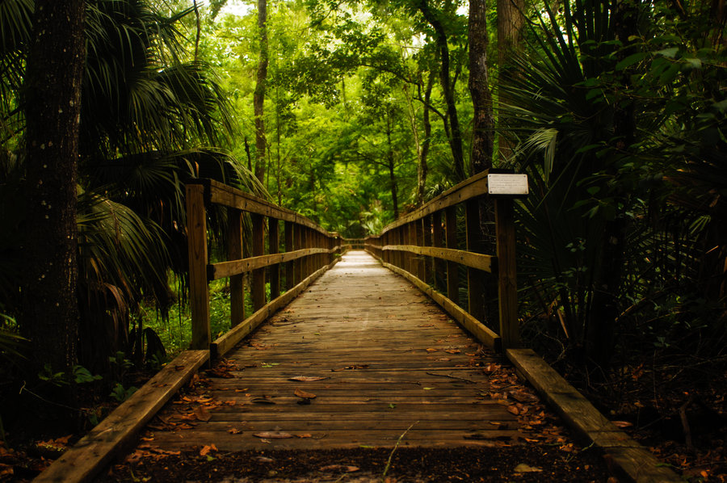

Vou seguir andando pela trilha. A caverna é escura e pode ter morcegos lá.
Sigo por uma trilha cheia de pedras e o tempo todo ouço barulho de pássaros e outras coisas. Muitos insetos, algumas árvores estranhas, mas nada fora do normal. Não dá pra ver o céu, as árvores cobrem todo o caminho. Nenhum unicórnio. Ando por meia hora e chego em um campo aberto e vasto, onde tem um grande rio.
Para atravessar o rio tem uma enorme ponte, e nela, vejo que tem algumas pessoas.
Acho que vou pedir ajuda para elas. Estou perdida e, pelo que tô vendo, eles não são nenhum gato falante ou algo estranho.